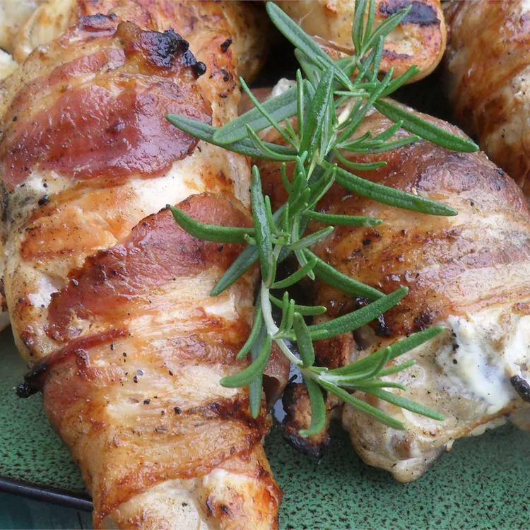

Home
Grilled Chicken with Rosemary and Bacon

Image of a Grilled Chicken with Rosemary and Bacon
Chicken breasts are seasoned simply with garlic powder,
salt, pepper, and fresh rosemary, and wrapped in bacon.
"This recipe comes together so easy with minimal prep," says Skoo.
Recipe
- 4 teaspoons garlic powder
- 4 skinless, boneless chicken breast halves
- salt and pepper to taste
- 4 sprigs fresh rosemary
- 4 thick slices bacon
Directions
- Preheat an outdoor grill for medium-high heat, and lightly oil the grate.
- Sprinkle 1 teaspoon garlic powder on each chicken breast and season with salt and pepper.
Lay one rosemary sprig on each chicken breast. \
Wrap bacon around the chicken to hold the rosemary on.
Secure bacon with a toothpick or an additional thick rosemary stem.
- Sprinkle 1 teaspoon garlic powder on each chicken breast and season with salt and pepper.
Lay one rosemary sprig on each chicken breast.
Wrap bacon around the chicken to hold the rosemary on.
Secure bacon with a toothpick or an additional thick rosemary stem.